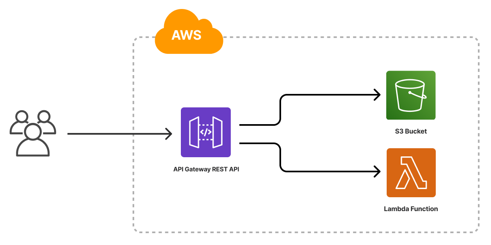
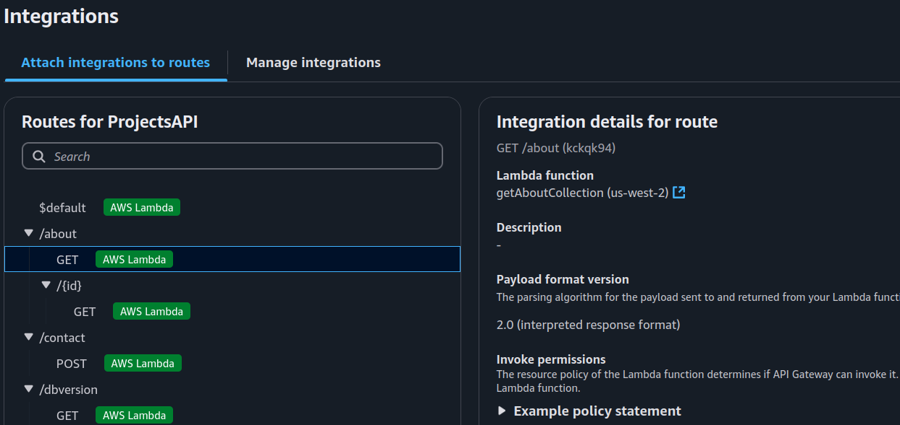

Planning the Project
My first step into this major project was to decide how I
wanted it to be done and what resources I wanted to use.
In my two final classes before obtaining my bachelors, I learned about the MEAN stack and also
about hosting a website in AWS using the API Gateway, Lambda and S3 Buckets.
Whilst I learned much in those classes, I wanted to get a deeper understanding on how everything
works.
Thus, I chose to use Angular for the front-end framework, MongoDB for storing assets, Node.js
for the front-end functionality, AWS API Gateway for retrieving data from Mongo,
Lambda for processing queries, S3 for hosting the front-end and more!

Learning CSS
Now that I had my goals in mind, it was time to learn some
CSS.
When creating the Angular project, I chose to use the recommended SCSS to understand what might
be used in professional settings.
To learn CSS, I looked at the code that was presented in the template portfolio I used earlier.
I went line by line and commented what everything was contributing to the style.
To help me with this, I used resources like W3schools to help me understand what the CSS was
doing.
Learning HTML
Learning HTML was far easier than the little amount of CSS
I learned.
I analyzed my previous portfolio and looked how each item was separated.
I also learned how to import my classes from CSS, which was complicated when messing with the
style hierarchy.
A last thing that I learned was the JavaScript integration into the animations or other styles.
This helped me tremendously with the work slider you saw when entering this site!
Moving items into Seperate Components
Once I got the gist of working on the user interface, I had
the outline of what I wanted my home screen to become.
Now I turned my focus towards routing. I wanted the home screen to be the initial screen.
To do this, I started separating each of my items into smaller components and stating their
paths in the angular router.
I also have some smaller components like the work-slider or image-display that are components I
use inside other screens!
Creating the local database using docker
Now that the screens are in the works, I need to address a
very important part of this project.
This being the database that holds my assets. I wanted to host the database inside a docker
container, since I didn't get much practice with docker in school.
This was helpful for keeping the database separate from everything else on my local machine.
Once I got the docker container working, I made a small JavaScript application for adding items
to the database.
In that project, I also made a server file that used express to serve the assets on the
database.
This allowed me to call the local URL to fetch the images and text!
Moving the Database Into Atlas
Once I finished the majority of the website on the local
instance.
It was time to shift everything into the cloud. My first step was to move the database into
Atlas.
I chose to do this first because it allowed me to test the endpoints locally before creating the
API gateway and lambda functions for processing requests.
This was surprisingly easy to accomplish, all I needed to do was route my file to the Atlas
endpoint.
Creating the API Gateway
Now that my data was successfully in Atlas, it was time to
create the API Gateway that I will use to fetch the assets in the production versions.
I chose to use an HTTP API for the decreased cost and since I didn't need it to do anything too
crazy.
I started by creating endpoints for each of the distinct items I may need to grab.
For instance, image purely for an image, school for school projects and so forth.
Once I had all of my endpoints ready to go, it was time to add some integration.

Making the Lambda Functions
Making the lambda functions took some time to learn.
This being because I couldn't just copy and paste the queries from the local server.
I had to learn how lambda handled events, specifically how it sent data like body, headers and
query strings.
This is how I was able to create variable endpoints where an item ID can be added to specify an
image.
Loading Frontend Into the S3 Bucket
Now that my backend has been tested and is sending all the
assets properly.
It is time to think about moving the front end into the S3 bucket. For this I made a new bucket
that had a static IP address.
I set the bucket policy to allow external entities to view the contents. I also had to specify
my index.html the website used.
On the local side of this process, I needed to build the project.
Since this is an initial test, I used the command “ng build --configuration
development”.
This condensed the project into the SPA format that I can upload to the bucket.
Once the items were uploaded, it is time to test the S3 bucket and see if we are able
to
fetch the site!
Creating a Domain
Now that the website is being hosted from the S3 bucket.
It is time to get rid of the nasty URL that users would have to remember when accessing the
website.
I used AWS Route 53 to register for the domain that you see in your address bar! After creating
the domain, I created the www. Subdomain that points to the website.
Using AWS CloudFront, I was able to route the endpoint to the S3 bucket with ease.
Signing an SSL certificate
Now that the website Is visible and working using the
domain, It is time to get rid of the ugly lock error on the address bar.
I needed to route the website through HTTPS and to do this I needed an SSL certificate.
I was able to get a certificate signed through Amazon using their certificate manager.
This step is crucial for keeping your site secure, but also for increasing the legibility of
your work!
Implementing SigV4 for API Calls
A concern that has been floating in mind has been the
security
of the API that connects the frontend to the database.
I want to ensure that users cannot scrape the URL and overload the API/DB with requests.
To accomplish this, I used AWS Signature V4 to sign requests before sending to the API.
This worked by retrieving tokens from AWS that provide authenticated access to an IAM user who
has
permission to invoke the API.
Through this, I was able to ensure that only those who have this key (The front-end) can send
requests to the back-end.
Creating IAM User
Creating the IAM user was a simple but delicate process.
I needed to ensure I only gave the user access to what it needs.
This way, if someone obtains a token, they won't have scope to harm the entire environment.
I made a user that is allowed to create STS tokens, with these the front-end can access the system
as
this user.
This role has a policy attached to it that enabled it to invoke the backend API.
Implementing DB Versioning
With the project approaching release, I wanted to finish some
things
that have been on my mind.
First of which is data caching using session storage.
I wanted to ensure that the database and API has the least amount of strain.
I created a DB versioning system. For example, if a user had items cached, it was call the API
asking
for
the latest version.
If the local version matched the latest, then it would recycle the data.
This allowed me to reduce the strain, querying large amounts of data repeatedly.
Fixing CORS issues
Finally, a problem that I had in the final sprint of the
project
was
the DB items not loading when accessing the front end from the S3 bucket.
The error was related to CORS, for whatever reason the origin was undefined when fetching the
assets.
This
problem was caused by the implementation of SIG V4.
I was able to find a solution for my local build by using a reverse proxy for accessing the items.
When it came to the S3 version of the front end, I still had this issue.
After trying for days to think of a solution, I finally, looked at how I might be able to create a
reverse
proxy for the cloud version too. This is where CloudFront came into play.
I was able to create a reverse proxy in CloudFront that pointed to my API Gateway. The reverse proxy
solved
my CORS issues and allowed the call to reach my lambda functions!
Implementing SigV4 for API Calls
A concern that has been floating in mind has been the security
of
the
API that connects the frontend to the database.
I want to ensure that users cannot scrape the URL and overload the API/DB with requests.
To accomplish this, I used AWS Signature V4 to sign requests before sending to the API.
This worked by retrieving tokens from AWS that provide authenticated access to an IAM user who has
permission to invoke the API.
Through this, I was able to ensure that only those who have this key (The front-end) can send
requests
to
the back-end.